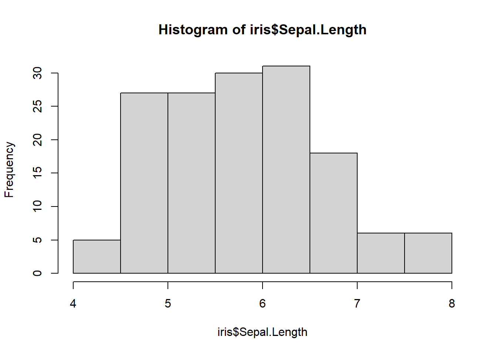

plot(iris$Species, col = "#d8af90") # Alternative : barplot(iris$Species, col = "#d8af90")}Statistiques descriptives
Synthèse
Pour les statistiques univariées
| Type de variable | Mode de représentation | Indicateurs numériques |
|---|---|---|
| Qualitatives | Diagramme en barres ou circulaire | Effectifs en fonction des modalités |
| Quantitatives discrètes | Diagrammes en bâtons ou boîte à moustaches | Indicateurs de tendance centrale :
Indicateurs de dispersion :
|
| Quantitatives continues | Histogramme ou boîte à moustaches | Idem |
Pour les statistiques bivariées
| Type de combinaison | Mode de représentation | Comparaison numérique |
|---|---|---|
| Qualitative x Quantitative | Comparaison de boîtes à moustaches |
|
| Quantitative x Quantitative | Nuage de points | Covariance et corrélation (moyenne des produits termes à termes des données centrées-réduites) |
| Qualitative x Qualitative | Diagrammes en barres pour chaque modalité | Test du chi² (écart à l’indépendance) |
Eléments de vocabulaire
Statistique inférentielle = estimer des informations sur une population à partir d’un échantillon.
Statistique descriptive = décrire les données. C’est un préalable à toute étude statistique
Statistiques descriptives univariées
Variables qualitatives
Modalités de représentation graphique
Les modalités de représentation sur les diagrammes en barres.
# Dans ggplot
ggplot(data = iris, mapping = aes(x = Species)) +
geom_bar(fill = "lightgrey", col = "darkgrey") +
theme_classic() +
labs(title = "Nombre d'iris en fonction des espèces",
y = "Individus",
x = "Espèces")Les données peuvent également être représentées via un diagramme circulaire.
pie(table(iris$Species), col = c("#d8af90", "#aac1ce", "#bed6d2"))# Dans ggplot
Table_Especes <- as.data.frame(table(iris$Species))
ggplot(data = Table_Especes, mapping = aes(x="", y = Freq, fill = Var1)) +
geom_bar(stat="identity", width=1) +
coord_polar("y", start=0)Variables quantitatives
Modalités de représentation
- Pour les variables discrètes : diagrammes en bâtons
SL_discr <- round(iris$Sepal.Length, 0)
barplot(table(SL_discr))- Pour les variables continues : histogrammes
hist(iris$Sepal.Length)
- Les boites à moustaches permettent de montrer les quartiles
Indicateurs numériques
Indicateurs de tendance centrale
La moyenne est le centre de gravité des observations.
mean(iris$Sepal.Length)[1] 5.843333La médiane est le centre de distribution des valeurs.
median(iris$Sepal.Length)[1] 5.8Les quartiles séparent une série en sous-groupes d’effectifs similaires.
SL_Quarti <- cut(iris$Sepal.Length,
breaks = quantile(x = iris$Sepal.Length,
probs = seq(0, 1, 0.25)),
include.lowest = TRUE) # l'argument probs permet de modifier les quantiles sélectionnés
table(SL_Quarti)SL_Quarti
[4.3,5.1] (5.1,5.8] (5.8,6.4] (6.4,7.9]
41 39 35 35 Indicateurs de dispersion
La variance est la moyenne des carrés des écarts à la moyenne.
var(iris$Sepal.Length)[1] 0.6856935L’écart-type (noté sigma minuscule) est la racine carré de la variance. Il s’exprime donc dans la même unité que les données initiales.
sd(iris$Sepal.Length)[1] 0.8280661Centrer les données consiste à retrancher la moyenne aux valeurs de la série. Le signe indique où se situe la valeur par rapport à la moyenne (si la valeur centrée est positive, la “vraie” valeur est supérieure à la moyenne). Les données centrées ont une moyenne nulle.
Réduire les données consiste les diviser par l’écart-type. Les données réduites sont sans unité.
Les données centrées-réduites ont comme propriétés d’être de moyenne nulle et d’écart-type égal à 1.
head(scale(iris$Sepal.Length), 5) # la fonction scale permet de centrer-réduire les données [,1]
[1,] -0.8976739
[2,] -1.1392005
[3,] -1.3807271
[4,] -1.5014904
[5,] -1.0184372Centrer-réduire permet de situer un individu plus facilement par rapport à la série. S’il se situe à plus de 2 écarts-types de la moyenne, il en est “vraiment” très loin.
Pour aller plus loin :
Inégalité de Markov
Inégalité de Bienaymé-Tchebychev
Statistiques descriptives bivariées
Qualitatif x Quantitatif
Représentation graphique
La représentation graphique peut être réalisée via la comparaison des boites à moustaches. On étudie alors la distribution conditionnelle.
plot(iris$Sepal.Length ~ iris$Species)
Pour voir les résultats sous forme de tableau :
Aggr <- aggregate(iris$Sepal.Length, by = list(iris$Species), FUN = quantile)
tibble(Aggr)# A tibble: 3 × 2
Group.1 x[,"0%"] [,"25%"] [,"50%"] [,"75%"] [,"100%"]
<fct> <dbl> <dbl> <dbl> <dbl> <dbl>
1 setosa 4.3 4.8 5 5.2 5.8
2 versicolor 4.9 5.6 5.9 6.3 7
3 virginica 4.9 6.22 6.5 6.9 7.9Dans le tidyverse, les modalités de rédaction sont les suivantes :
iris %>%
group_by(Species) %>%
reframe(Quantile = quantile(Sepal.Length))# A tibble: 15 × 2
Species Quantile
<fct> <dbl>
1 setosa 4.3
2 setosa 4.8
3 setosa 5
4 setosa 5.2
5 setosa 5.8
6 versicolor 4.9
7 versicolor 5.6
8 versicolor 5.9
9 versicolor 6.3
10 versicolor 7
11 virginica 4.9
12 virginica 6.22
13 virginica 6.5
14 virginica 6.9
15 virginica 7.9 Décomposition de variance
La quantification du lien entre les variables peut être réalisée par la décomposition de la variance. L’équation de décomposition de la variance sépare la variabilité totale de Y en deux termes dont l’un peut être attribué au facteur X.
Il s’agit de l’étude de la variance entre deux groupes :
La variance intra-groupe : moyenne des variances propres à chaque modalité (ici : la moyenne des variances des longueurs de pétales en fonction de l’espèces)
La variance inter-groupe : écarts des moyennes de groupe (ici : la variance des longueurs de pétales à laquelle on retire la variance intra).
La variance inter-groupes est la part qu’on attribue à X :
Si elle est nulle : les moyennes de groupe sont égales à la moyenne générale donc égales entre elles : il n’y a pas de différence en moyenne entre les groupes du fait de l’action du facteur
Si la variance inter-groupe est grande : une ou plusieurs moyennes de groupes diffèrent singulièrement de la moyenne générale. Si la variance inter-groupe est nulle : on n’observe qu’une seule et même valeur par groupe et le facteur explique donc toute la variabilité de Y.
Le rapport de corrélation est la proportion dans la variabilité totale de Y représentée par la part attribuée au facteur X. Le rapport est compris entre 0 et 1 (η²).
Le rapport de corrélation est obtenu de la façon suivante dans R :
Res_ANOVA <- anova(lm(Petal.Length~Species,data=iris))
Res_ANOVA[1,2]/sum(Res_ANOVA[,2])[1] 0.9413717Quantitatif x Quantitatif
Représentation graphique
La représentation graphique est réalisée via un nuage de points.
plot(Sepal.Length ~ Petal.Length, data = iris)Covariance / Corrélation
La covariance donne une indication sur la manière dont les deux variables “covarient”.
cov(x = iris$Sepal.Length, y = iris$Sepal.Width)[1] -0.042434Le coefficient de corrélationn linéaire est la moyenne des produits terme à terme des données centrées-réduites.
cor(x = iris$Sepal.Length, y = iris$Sepal.Width)[1] -0.1175698Il est compris en -1 et 1, sans unité. S’il est égal à 1, cela correspond à des points alignés sur une droite de pente positive.
Le coefficient de corrélation mesure l’intensité de la linéarité de la relation entre les observations. Une corrélation nulle ne garantit pas l’absence de tout lien mais indique l’absence de relation linéaire.
Modèle linéaire simple : droite des moindres carrés
La fonction lm() permet d’obtenir la droite de régression.
Le coefficient de détermination R² est le rapport entre la variance des valeurs ajustées et la variance des valeurs de Y. C’est un rapport compris entre 0 et 1. Il s’agit de la variance des valeurs ajustées (fitted values) divisée par la variance des valeurs observées.
Qualitatif x Qualitatif
Tableau de contingence
On résume les données dans le tableau de contingence, tableau qui regroupe les effectifs observés dans chaque croisement de modalités.
En appliquant la somme par ligne et par colonne on obtient les distributions de X et Y séparément. Les effectifs correspondant sont ceux des distributions marginales (univariées) des variables.
iris$Taille <- as.factor(ifelse(iris$Sepal.Length > mean(iris$Sepal.Length), "Grande sépale", "Petite sépale"))
tab_contingence <- table(iris$Species, iris$Taille)
apply(tab_contingence, FUN=sum, MARGIN=1) # ou MARGIN = 2 setosa versicolor virginica
50 50 50 On peut représenter les diagrammes en barres associés à chacune d’elles.
Distributions conditionnelles
round(100 * prop.table(tab_contingence, margin = 2), 1) # ou margin = 1 pour la distribution selon les lignes
Grande sépale Petite sépale
setosa 0.0 62.5
versicolor 37.1 30.0
virginica 62.9 7.5On peut représenter les tuyaux d’orgues associés.
plot(round(100 * prop.table(tab_contingence, margin = 2), 1))Chi² : mesurer le lien entre les variables
On quantifie le lien entre les variables en mesurant l’écart aux données avec une situation conceptuelle d’absence de lien que l’on appelle hypothèse d’indépendance des données :
H0 est l’hypothèse d’indépendance
H1 est l’hypothèse de dépendance
chisq.test(tab_contingence)
Pearson's Chi-squared test
data: tab_contingence
X-squared = 78.643, df = 2, p-value < 2.2e-16p-value : probabilité d’obtenir ce résultat si le jeu de données était indépendant. On prend le plus souvent la limite de 5% pour rejeter l’hypothèse d’indépendance. Dans l’exemple ci-dessus, on rejette l’hypothèse de l’indépendance entre le fait d’avoir une grande ou une petite sépale et l’espèce d’iris.